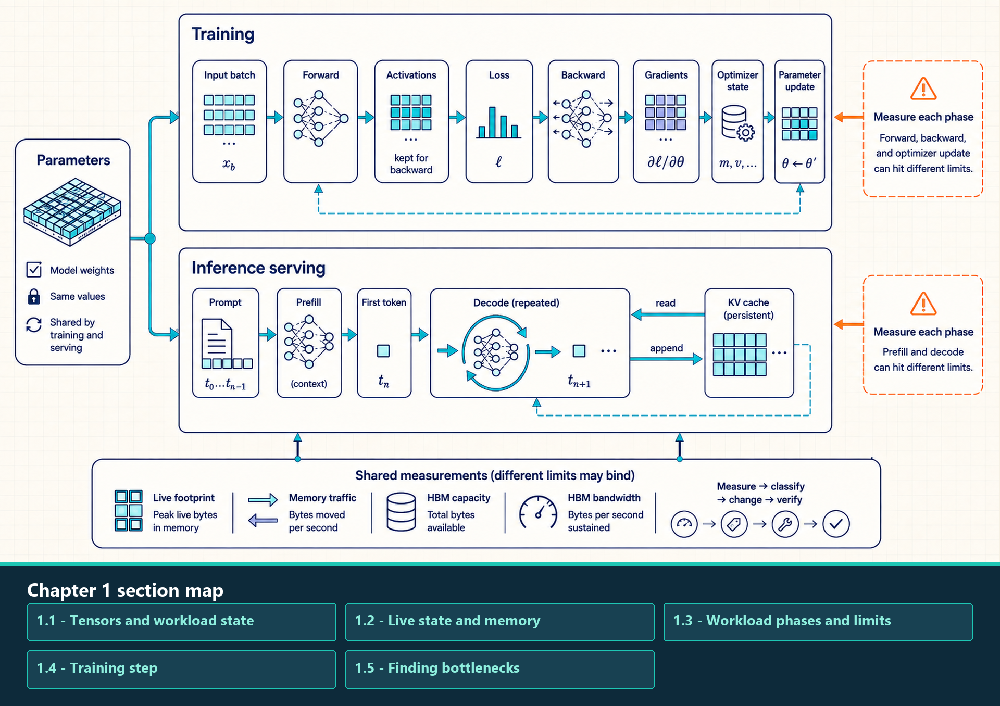

1 LLM Workloads and Performance Limits
Training and serving run related model operations, but they keep different tensors in memory and move different bytes during each phase. This chapter shows how to name that live state, measure one phase at a time, and identify the resource and software component that limits it.
To explain a measured slowdown, first identify the phase, such as training backward or one-token decode. Then list the tensors and buffers that remain live, estimate which bytes move, and measure the compute, memory, launch, communication, and waiting behavior in that phase. These steps narrow the problem to the limiting resource or wait and to the controls that can change it.
A bottleneck is the resource or dependency that currently limits one measured execution region. It is not a permanent label for the whole model: a training forward pass, an optimizer update, prompt prefill, one-token decode, and distributed synchronization can each be limited by a different resource.
Training and inference serving repeatedly use the same model parameters, but their phases retain different tensors and expose different limits.

The upper path follows activations, loss, gradients, optimizer state, and parameter update during training. The lower path separates prompt prefill from repeated decode and shows the KV cache as persistent state that decode reads and appends. Capacity, traffic, and bandwidth must be measured for the active phase rather than assigned to the whole model.
1.1 Tensors and workload state
An LLM workload is a repeated sequence of mathematical operations applied to model state and intermediate tensors. Whether training updates parameters from data or inference evaluates fixed parameters across prompts, the execution mode determines which objects remain live and which measurements reveal the resource that limits the measured phase.
The performance objects are ordinary PyTorch and transformer objects viewed through memory and execution. Tensors, parameters, activations, gradients, logits, loss, and KV cache each carry a distinct storage and lifetime cost.
A tensor has two identities at the same time. Mathematically, it is a scalar, vector, matrix, or higher-dimensional array used in the model computation. Physically, it is a descriptor over storage: shape, dtype, strides, device, layout, storage offset, and sometimes gradient metadata. Performance depends on both identities.
- Mathematical tensor: The array used in an operation, such as a vector of token embeddings, a matrix of weights, or a batch of logits.
- Tensor storage: The underlying bytes allocated on CPU memory, GPU HBM, pinned host memory, or another device-visible memory tier.
- Shape: The logical dimensions of the tensor. Shape controls matrix sizes, attention dimensions, batch sizes, and whether operations can use efficient kernels.
- Dtype: The numeric representation, such as FP32, BF16, FP16, FP8, INT8, or INT4. Dtype controls bytes per element and can change which kernels are legal or fast.
- Device: Where the tensor lives, such as CPU memory or
cuda:0. Device placement controls dispatch and determines whether hidden transfers are needed. - Strides and layout: The mapping from logical indices to storage offsets. Strides determine whether nearby logical elements are nearby in memory and whether a tensor is contiguous.
- Autograd metadata: Training-time metadata used by PyTorch autograd to know which operations produced a tensor and how to compute gradients.
- Logits: Unnormalized model scores. In a causal language model, each predicted token position usually has one score for every vocabulary item; a softmax can convert those scores into probabilities.
- Loss: A scalar or reduced tensor that measures how far the model output is from the training target and supplies the starting value for backward propagation.
This distinction explains several later performance issues. A transpose can be mathematically cheap while creating a non-contiguous view. A dtype change can halve memory traffic while selecting a different kernel path. A tensor’s device determines whether a copy is required. Autograd metadata can extend a tensor’s lifetime through backward propagation.
The next section names the persistent and temporary model objects that use this storage. Their lifetimes, rather than their mathematical names alone, determine peak memory and data movement.
Example: Inspecting tensor identity. This example requires PyTorch and an available CUDA device. For the contiguous 2 x 3 FP16 tensor below, expect shape (2, 3), dtype torch.float16, device cuda:0 or another selected CUDA device, stride (3, 1), True for contiguity, and 12 bytes of tensor payload. The device label can vary with the selected GPU.
Code example: Inspecting tensor identity
import torch
x = torch.randn(2, 3, device="cuda", dtype=torch.float16)
print(x.shape)
print(x.dtype)
print(x.device)
print(x.stride())
print(x.is_contiguous())
print(x.numel() * x.element_size(), "bytes")Example: Counting parameter and gradient bytes. This abbreviated calculation assumes that model already exists. Parameter bytes can be counted immediately; gradient bytes appear only after backward propagation has populated p.grad. The result covers tensor payloads, not allocator reservation, fragmentation, metadata, workspaces, or distributed buffers.
Code example: Counting parameter and gradient bytes
import torch
param_bytes = sum(
p.numel() * p.element_size()
for p in model.parameters()
)
grad_bytes = sum(
p.grad.numel() * p.grad.element_size()
for p in model.parameters()
if p.grad is not None
)
print(f"parameters: {param_bytes / 2**20:.1f} MiB")
print(f"gradients: {grad_bytes / 2**20:.1f} MiB")The same tensor properties produce two distinct execution regimes. Training changes parameters and retains backward state; inference serving keeps parameters fixed while maintaining request and cache state. The comparison below names the goal, live objects, phases, and measurements for each regime.
- Training: Repeated execution that updates model parameters from data.
- Goal: Improve the objective while maximizing useful tokens per second, numerical stability, and hardware utilization.
- Live objects: Parameters, activations, gradients, optimizer state, temporary workspaces, and often communication buffers.
- Phases: Forward propagation, loss computation, backward propagation, optimizer step, and distributed synchronization when multiple ranks are used.
- Measurements: Training tokens per second, step time, time to target quality, memory headroom, scaling efficiency, and numerical stability.
- Inference serving: Request-driven execution that generates outputs with fixed model parameters.
- Goal: Meet latency, throughput, quality, and cost targets under a service workload.
- Live objects: Parameters, temporary activations, KV cache, scheduler metadata, request queues, sampling state, and sometimes communication buffers.
- Phases: Tokenization, request admission, prefill, decode, post-processing, and streaming.
- Measurements: Serving measurements describe waiting, streaming speed, and completed work. Chapter 8 develops these quantities and their measurement boundaries.
- Time To First Token (TTFT): elapsed time from request arrival to the first emitted token.
- Inter-Token Latency (ITL): the gap between two consecutive emitted tokens.
- Time Per Output Token (TPOT): for one request with \(n>1\) output tokens, the mean of its \(n-1\) ITL gaps. It excludes first-token latency. When combining requests, state whether each request or each token gap has equal weight.
- End-to-end latency: elapsed time from arrival to completion.
- Throughput: completed requests or tokens per second for the stated workload.
- Goodput: completed work per second that meets the specified service targets, such as latency and quality limits in a Service-Level Agreement (SLA).
Training and inference now have concrete meanings: each mode is a sequence of phases operating on named state objects. The next section follows the objects that remain live as those phases execute.
1.2 Live state and memory
Section 1.1 defined the individual objects. Memory pressure depends on which of those objects overlap in time. Parameters and optimizer buffers may stay live for the whole training step; saved activations accumulate during forward; gradients appear during backward; and temporary workspaces can raise the peak even though they exist briefly. In serving, model weights remain fixed while admitted requests grow and release KV-cache blocks.
- Parameters: Learned weights. They are used in both training and inference. Footprint scales with parameter count and dtype; for example, a 7B-parameter model in FP16 or BF16 is roughly 14 GB before metadata, fragmentation, and engine overhead.
- Activations: Intermediate tensors produced by forward propagation. Training often saves them for backward propagation; inference usually releases most of them quickly. Footprint scales with batch size, sequence length, hidden dimension, layer count, precision, and checkpointing policy.
- Gradients: Derivatives of the loss with respect to parameters. They are training state. Their footprint is often parameter-sized before sharding, accumulation strategy, or reduced-precision storage changes it.
- Optimizer state: Extra buffers used by optimizers such as Adam or AdamW. Adam-style first and second moments can exceed the parameter footprint when stored in FP32, which is why optimizer state becomes a training memory wall.
- Temporary workspaces: Short-lived buffers allocated by kernels, vendor libraries, compilers, or serving engines. They affect peak memory and can cause out-of-memory failures.
- Key-value (KV) cache: Inference-serving attention state that stores previous keys and values so decode does not recompute the full prefix.
- Communication buffers: Intermediate tensors used for all-reduce, all-gather, reduce-scatter, all-to-all, or point-to-point transfers. They appear in distributed training and distributed inference and can create memory spikes as well as network traffic.
- Request and scheduler metadata: Serving-engine state that tracks request IDs, token positions, sampling constraints, KV block tables, prefix-cache entries, queue state, and admission decisions. It is smaller than tensor state but can affect launch gaps, queueing, and cache correctness.
A model that fits in one mode may fail in another. A checkpoint that fits for inference may not fit for training once gradients and optimizer state are added. A model that fits short prompts may fail under long-context serving because KV cache grows with admitted requests and sequence length.
Peak-memory lifecycle
Before forward: Parameters, input tensors, optimizer state, and any persistent buffers are already live. The model may appear to fit at this point while the upcoming step still cannot run.
During forward: Each layer produces activations. Training keeps many of them alive because backward propagation will need the original values; inference usually releases most temporary activations quickly.
At loss and backward start: The loss is the starting point for backward traversal of the autograd graph. Backward reads saved activations, writes gradients, and may allocate temporary workspaces for backward kernels.
During optimizer step: Adam-style optimizers read parameters, gradients, first moments, and second moments, then write updated state. This phase can be memory-bandwidth-bound even if the forward pass was tensor-core-heavy.
After step: Gradients may be set to None and activations are released, but allocator-reserved memory can remain high because the caching allocator keeps blocks for reuse.
In a transformer with the same attention layout in every layer, each retained token stores one key vector and one value vector per layer and KV head. Without cross-request prefix sharing, a first payload estimate is
\[ M_{\mathrm{KV}}=2NLH_{\mathrm{KV}}d_hs. \]
Here \(N\) is the total number of retained token positions across admitted requests, \(L\) is layer count, \(H_{\mathrm{KV}}\) is KV-head count, \(d_h\) is head dimension, and \(s\) is bytes per cache element. Allocator blocks and engine metadata add overhead. Mixed attention layouts require a layer-by-layer sum instead. Chapter 8 applies this estimate to concurrency and capacity, while Chapter 9 explains how the cache is laid out and accessed.
1.3 Workload phases and limits
Footprint asks whether the live objects fit. Traffic asks how many bytes the phase reads and writes. Throughput asks how quickly the hardware can perform those transfers or calculations. Diagnose a phase by measuring these separately; fitting in HBM does not show that HBM bandwidth is sufficient.
- Bandwidth and locality: The rate and distance at which bytes must reach the computation. Reuse in registers, shared memory, or cache reduces traffic to slower memory tiers.
- Compute throughput: The rate of useful arithmetic work for the phase, interpreted together with tensor shapes, precision, and hardware utilization.
- Launch and control overhead: Time spent in Python dispatch, framework dispatch, kernel launches, compiler transitions, or scheduler decisions.
- Communication and synchronization: Time spent moving tensors across GPUs or ranks and waiting for participants to reach compatible execution points.
Diagnose one phase at a time by naming the work, the live objects, the target measurement, and the resource whose capacity, throughput, or dependency is exhausted.
- Training forward: Reads parameters and input batches, writes activations, and often uses tensor-core-heavy matrix operations. Likely bottlenecks are compute throughput, activation memory, and HBM traffic. Developed in Chapters 2 through 5 and revisited in Chapters 7 and 13.
- Training backward: Reads saved activations and parameters, writes gradients, and may recompute activations when checkpointing is used. Likely bottlenecks are activation memory, HBM bandwidth, and gradient computation. Developed in Chapters 5, 11, and 13.
- Optimizer step: Reads parameters, gradients, and optimizer state, then writes updated parameters and state. Likely bottlenecks are memory bandwidth and optimizer-state footprint. Developed in Chapters 1, 7, and 13.
- Prefill: Processes prompt tokens and builds initial KV cache. It often forms large matrix operations over many tokens and can be compute-heavy. Developed in the inference, serving, and implementation chapters (8, 10, and 11).
- Decode: Generates one token at a time while reading parameters and the existing KV cache, then appending new KV entries. Likely bottlenecks are HBM bandwidth, launch overhead, batching, and cache layout. Developed in Chapters 6, 8, 9, and 10.
- Distributed synchronization: Moves gradients, parameters, activations, expert routes, or partial layer results between ranks. Likely bottlenecks are interconnect bandwidth, latency, topology, rank skew, and collective scheduling. Developed in Chapters 12 and 13.
Moving bottlenecks are normal. Removing recomputation can expose memory bandwidth. Increasing batch size can expose KV-cache capacity. Sharding model state can expose network synchronization. The engineering task is to follow the bottleneck as each change exposes a new constraint.
1.4 Training step
Section 1.3 identified the measurements and resource limits that can change across workload phases. A supervised training loop makes those phases concrete: each repeated step moves input data, runs forward computation, computes loss, propagates gradients backward, updates optimizer state, and may synchronize distributed workers.
The model receives input tensors, computes predictions, compares predictions with labels through a loss function, computes gradients through backward propagation, and updates parameters through an optimizer. Each line therefore identifies live state and a specific measurement target. Later chapters improve these same moments through placement, kernels, precision, graph capture, sharding, and communication scheduling.
- Forward propagation: Reads inputs and parameters, writes outputs, and may save activations for backward propagation.
- Loss computation: Turns predictions and labels into the scalar or batched objective being optimized.
- Backward propagation: Traverses the recorded computation in reverse to produce gradients.
- Optimizer step: Updates parameters using gradients and optimizer state.
- Device placement: Determines whether tensors live on CPU memory, GPU HBM, or another device, and therefore which transfers and execution paths the step uses.
Read the code as a workload trace. Each line identifies a live object, a resource it can stress, and a software layer that can own the likely fix.
Example: Minimal training loop. This abbreviated workload trace assumes that model, loader, and optimizer have already been constructed. It shows the logical order of a supervised training step and identifies where inputs, parameters, activations, logits, loss, gradients, and optimizer state enter the step.
Code example: Minimal training loop
import torch
import torch.nn as nn
device = torch.device("cuda", 0)
model = model.to(device)
loss_fn = nn.CrossEntropyLoss()
for batch in loader:
# Pinned source buffers plus non_blocking copies can overlap input transfer with GPU work.
input_ids = batch["input_ids"].to(device, non_blocking=True)
labels = batch["labels"].to(device, non_blocking=True)
# Releasing old gradient storage avoids writing a full tensor of zeros each step.
optimizer.zero_grad(set_to_none=True)
# Forward execution reads parameters, creates activations, and may retain them for backward.
logits = model(input_ids)
# Loss often reduces over batch, sequence, and vocabulary dimensions.
loss = loss_fn(logits, labels)
# Backward reads saved activations, writes gradients, and may trigger distributed collectives.
loss.backward()
# The optimizer reads and writes parameters, gradients, and optimizer-state buffers.
optimizer.step()What the training step makes measurable
Input transfer: The .to(device, non_blocking=True) calls are only asynchronous when the source path and stream dependencies permit it; pinned host memory is commonly needed for useful overlap.
Forward execution: PyTorch dispatches a graph of tensor operations. Large projections may call vendor GEMM kernels, while small elementwise regions may launch separate kernels unless compilation or fusion changes the path.
Activation retention: Autograd records operations and saves tensors needed for backward. The overlap of parameters, saved activations, gradients, and workspaces usually places peak training memory before or during backward.
Backward execution: Backward kernels consume saved activations and parameters to produce gradients. In distributed data-parallel training, gradient buckets may start all-reduce while earlier layers are still computing backward.
Optimizer state traffic: Adam-style updates often spend most of their time reading and writing parameter, gradient, and moment buffers.
Memory-reduction options: Activation checkpointing trades recomputation for lower saved-activation memory. Fully Sharded Data Parallel (FSDP) and Zero Redundancy Optimizer (ZeRO) shard model state across ranks. Each changes a different object or lifetime, so the profiler must identify which state limits the run.
The loop makes data input, forward state, loss, gradients, optimizer state, and distributed state measurable. Inference serving introduces a different live-state profile, including KV cache, request scheduling, prefix reuse, and speculative decoding; Chapter 8 begins that transition.
Distributed Data Parallel (DDP) adds gradient synchronization to this loop. Fully Sharded Data Parallel (FSDP) also changes where parameters, gradients, and optimizer state live and when they are gathered or scattered.
1.5 Finding bottlenecks
Finding a bottleneck connects a measured phase and its live state to the software or hardware layer that controls the limiting resource. The result is a targeted change with a measurable end-to-end effect.
1.5.1 Measurement workflow
Start with the slow phase and find the code, library, or setting that could change the work being measured. More than one change may help. For example, a compiler option can select a different GPU kernel, and a faster kernel can reduce both execution time and waiting in the request queue.
- Identify the phase: Name the measured region: training forward, backward, optimizer step, prefill, decode, scheduler work, or distributed synchronization.
- Name the live objects: List the parameters, activations, gradients, optimizer state, workspaces, KV cache, communication buffers, or metadata involved.
- State the metric: Choose the metric that defines success: step time, tokens per second, TTFT, TPOT, ITL, goodput, cost, memory headroom, or scaling efficiency.
- Measure the result: Use the appropriate evidence source: PyTorch Profiler, Nsight Systems, Nsight Compute, memory statistics, serving metrics, or NVIDIA Collective Communications Library (NCCL) logs.
- Classify the bottleneck: Decide whether the region is compute-bound, memory-bound, launch-bound, scheduler-bound, communication-bound, or capacity-bound.
- Identify a component you can change: Map the bottleneck to model structure, framework runtime, compiler/runtime, kernel library, serving scheduler, distributed backend, or hardware fabric.
- Choose the change: State what measurement should change if the explanation is right. Pick the smallest change controlled by that layer, such as improving locality, changing precision, repairing graph breaks, paging KV cache, changing batch limits, or altering parallelism.
- Verify correctness and end-to-end improvement: Compare that measurement and the end-to-end result. Check numerical correctness, model quality, cache correctness, and the user-facing metric. Accept the change when it preserves the required quality and improves the target service or training measurement.
Later chapters specialize this same loop for matrix kernels, runtime capture, quantization, inference scheduling, and distributed communication.
1.5.2 PyTorch performance interfaces
PyTorch is the main framework layer in the examples. Its performance interfaces represent state, dispatch device work, select supported backends, enter compilation, collect measurements, and express distributed operations.
- State and differentiation:
torch.Tensor,torch.nn,torch.autograd, andtorch.optimdefine tensor metadata, parameters, saved activations, gradients, and optimizer state. - Device execution:
torch.cudaexposes device placement, streams, events, synchronization, allocator statistics, and CUDA Graph entry points. Chapter 3 develops the CUDA execution and memory model. - Backend policy:
torch.backendsand precision APIs permit framework-owned implementation choices for matrix multiplication, cuDNN operations, and attention. Chapter 7 places those settings with precision and training behavior. - Compilation:
torch.compileenters the TorchDynamo, AOTAutograd, and TorchInductor path. Chapter 6 explains capture, generated kernels, CUDA Graph replay, and graph breaks. - Measurement:
torch.profilerandtorch.utils.benchmarkconnect framework operations to timing, memory, dimensions, and controlled microbenchmarks. Chapter 5 develops the profiling workflow. - Distributed execution:
torch.distributeddefines process groups and collectives. Chapters 12 and 13 separate framework APIs, communication backends, physical fabrics, and distributed strategies.
Model, tokenizer, checkpoint, quantization, serving, and distributed libraries enter at their first operational use. Appendix A collects the main software layers and controls after their teaching sections.
1.5.3 The component that controls each symptom
Once a symptom is measured, the next step is to find which component can change it. The list below connects common evidence to framework, runtime, kernel, serving, or communication controls.
When a run is slow, the fastest path is to name the symptom and move to the layer that can actually change it. The same model can be limited by device placement, kernel shape, compiler graph breaks, request scheduling, cache pressure, or communication. Each symptom points to a different library family.
- Device or dtype confusion: Start with PyTorch tensor metadata and
torch.cuda: check device placement, dtype, memory footprint, and PyTorch backend flags before changing the model. - Suspicious GPU timing: Use CUDA events or profiler timelines. CPU timers without synchronization often measure launch queuing or unrelated host work.
- Many tiny kernels or launch gaps: Inspect
torch.compile, TorchDynamo graph breaks, TorchInductor output, CUDA Graph capture, and dynamic-shape behavior before writing a custom kernel. - One kernel dominates the trace: Move to kernel-level tooling: Nsight Compute, Triton kernel code, cuBLAS/cuBLASLt path selection, attention-backend selection, or memory-coalescing analysis.
- Poor decode throughput: Inspect the serving-engine layer: request admission, continuous batching, KV-cache allocation, prefix caching, scheduler limits, and Time Per Output Token (TPOT).
- High Time To First Token (TTFT): Separate tokenization, queueing, prefill compute, and cache setup. A serving metric can be high even when individual kernels are healthy.
- Unexpected memory exhaustion: Separate model weights, activations, temporary workspaces, allocator reservation, KV-cache blocks, and fragmentation before assuming the checkpoint is too large.
- Multi-GPU waiting: Inspect
torch.distributed, NCCL logs, rank placement, process groups, collective timelines, and the physical fabric. Chapter 12 develops this layer in detail.
For each proposed change, name the component that interprets it and trace the effect to the measured result. A Triton rewrite changes one kernel’s instructions and memory traffic. It does not set the serving scheduler’s admission policy, but a faster kernel can raise the service rate and thereby reduce later queueing under load. NCCL executes collectives chosen by the distributed strategy; an NCCL transport or scheduling change can shorten communication, but it does not choose which tensors the model shards. A serving engine controls admission and batching and may also change compiler, capture, or backend integration. It does not edit the model code that caused a graph break, but it can alter whether that path is compiled, captured, avoided, or replaced. Measure the changed kernel, collective, capture path, or queue as well as the end-to-end metric so the causal path is explicit.
This workload view identifies what is slow and which component can change it, but it does not yet explain the device limits behind the symptom. Chapter 2 connects the live tensors and operations to GPU compute units, memory tiers, and interconnects.